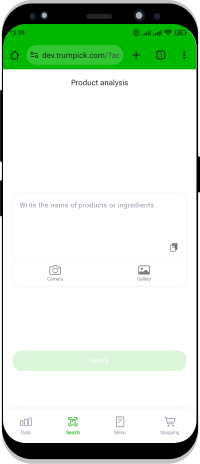

Improving Healthspan, Youthspan, Environment through nutrition
TrumPick helps you create the perfect menu and deciphers composition of any products
Based on independent analysis of data available to humanity by artificial intelligence (AI)

What you will learn from TrumPick
How your menu impact the aging of your body and the onset age of chronic diseases
The type of diet is crucial to living long and aging slowly
Essential compounds
How well does your diet meet the body's basic nutritional needs
Fluid balance
Enough water for the functioning of vital systems in your body?
What food choices to make to halt Global warming without compromising quality of life
Your decision about what type of meal you eat plays a key role in climate change
Personal CO2 budget
How many harmful compounds are emitted due to your choice
Stopping rise in prices
Your food choices affect the cost of healthcare and nutrition
Connection between foods, diseases, aging and climate
The true value of food and the possibility to track the results of dietary changes
Cost savings
Cutbacks on treatment, insurance, unnecessary purchases
Pleasure at spotlight
Quick recipes for delicious food to live long and age very slowly
Link between cell’s hunger and unhealthy weight
How to feed the body to full satisfaction with a small number of calories
Fit weight
Without calorie counting and suffering from hunger
Healthy eating behavior
Sound relationship with food and derive pleasure from meals
How TrumPick works
Tips
What to eat every day to maintain Healthspan, Youthspan, Environment
Scan
Write down the product name or take a photo of ingredients on the label
Get TrumPick replies
Substitution
Alternatives to replace familiar or scanned products
Specifics
What, how much, and for how long to eat for effect
Guidance
Exact actions in store and the kitchen
Content & Significance
Vitamins, trace element, fiber, antioxidants, food additives
TrumPick is particularly important
Who love the Earth
18% of Global warming is responsible for product groups harmful to Healthspan & Youthspan
Equivalent to stopping all cars, trains, ships and planes combined
Who love the animals
For strict vegans. For vegans.
For lacto-ovo-vegeterians.
For pesceterians.
Explicit or implicit products and food additives requiring the exploitation or killing of animals
Who has health trouble or allergy
Nutrition to accelerate disease remission, improve test results, and subjective well-being
And also about the connection of products with skin condition, allergies, sensitivity, histamine, etc.
For pregnant or weaning
Conceiving a healthy offspring.
Overcoming difficult pregnancies.
Proper introduction to solid foods.
Special place for preventing allergies in a baby and teaching healthy food relationships
Who cares about unfair marketing
Claimed health benefits of foods or advertised dietary systems genuinely beneficial?
If you want to truly understand the truth about nutrition and are interested in tangible results
Where TrumPick works
Web for any devices

Computer
Tablet
Smartphone
GooglePlaySoon
AppStoreSoon
TrumPick data: the most reliable of available
Nutrition of long-livers. Scientific papers. Info from doctors. Examination of statistics.
Big data analysis reveals weak or sponsored data. Competent and independent food facts on your devices
Why TrumPick
Questions? TrumPick Answers
How much does it cost to use TrumPick?
TrumPick provides knowledge about the connection between food and health for free.
If you would like to express your gratitude and support the project, you can use the form or go to the application: "Data" - "Settings" (top right corner) - "Reward for the result." All funds received from voluntary support go towards the development of the project.
How much does a balanced diet cost?
TrumPick recommendations do not include a set of products that must be chosen mandatory to achieve results. You can independently modify the products containing important compounds for health and youth according to your preferences. These can be various groups of products, even in opposing price and category ranges.
TrumPick analytics for major world regions has shown that adhering to the project's recommendations is comparable to expenses with a standard diet. Typically, in each region of the world, including those in northern latitudes, there is an inexpensive category of products that meet the criteria of balanced nutrition
Compiled my actual menu. Why do I have a low onset age of aging?
"Often, we misunderstand the term 'balanced nutrition.' Most people genuinely try to adhere to dietary principles that they believe are correct.
However, current nutrition science, based on peer-reviewed articles, academic literature, human physiology, chemistry, and sociology, has formulated fundamental principles and approaches related to real criteria for balanced nutrition. These may differ from what an individual, including a scientist, doctor, author of popular books, and so on, may think about nutrition.
For this reason, you might see an evaluation that differs from what you expected.
TrumPick's main goal is to help you improve your health and preserve youthfulness. You will see these results through medical tests and subjective well-being. However, it's essential to be ready for a change in your daily diet. Initially, it might seem challenging. However, on days 20-60, when you observe clear positive results and get used to the new dietary style, it will become easy.
balanced nutrition, as TrumPick suggests, consists of various ingredients and food groups that can be part of very delicious dishes. The main thing is your sincere and real desire to change your health and appearance for the better, not just pretending to make changes. In reality, it's a small effort leading to tremendous positive results.
If, for social, cultural, or personal reasons, or due to a strong belief in certain arguments, you find it challenging to adhere to rational principles, you can use TrumPick 'for information' and situational application, meaning only executing those recommendations that personally suit you. This will also improve your well-being and reduce the risks of chronic diseases, even if not as significantly as following most of TrumPick's tips"
I have bad genetics and high disease risks. Can nutrition help me?
"Yes, proper nutrition can play a crucial role in managing disease risks, even with the overwhelming majority of genetic predispositions. Although genetics can influence your susceptibility to some diseases, the principles of balanced nutrition generally play a decisive role, with few exceptions. This is true even for many active chronic diseases, often reported as having genetic foundations, which can be brought into remission.
For instance, most cardiovascular diseases, including atherosclerosis ('cholesterol plaques'), erectile dysfunction, type 2 diabetes, hypertension, constipation, many types of cancer, and more, can be entirely preventable through nutrition. These diseases are the main causes of premature death, reduced comfort, and quality of life, and they consume significant resources for treatment.
Compounds present in food either stimulate the action of genes leading to diseases or suppress them, preventing the onset of these diseases.
Moreover, many diseases attributed to predominant genetic factors may not be truly genetic. They are often linked to dietary and lifestyle habits passed down from parents and grandparents, as well as prevailing habits in the society you live in. Changing behavior or being in the company of people with healthier habits can radically improve health, and diseases with presumed genetic predispositions may not develop.
You can try using TrumPick and see how your test results and well-being change after a couple of months. TrumPick recommendations are designed not to harm you. If you don't see a clear and distinct result, you can simply return to your old habits and only adopt what you like from TrumPick's advice.
In essence, if you are skeptical about the power of nutrition, start using TrumPick as an opportunity to try something new without additional investments. If this experience proves enjoyable over 2-3 months, you can incorporate it into your life"
How likely is it that following TrumPick's advice will help me improve my health and slow down aging?
"TrumPick recommendations are structured in a way that their implementation cannot cause any harm, both in the long term and during the moment of execution.
Effectiveness depends on how closely you follow the advice. If you adhere to each of the following points for more than 2-3 months, the likelihood of preventing and remission of diseases is assessed to be extremely high, and for most conditions, the probability is above 95%: accurately choose a regimen suitable for your situation; at least 80% of the products in the "Menu" section are in the green zone, and no more than 5% are in the red zone; the percentage content is more than 80% of the daily required compounds for more than 2-3 months; you roughly adhere to the quantity of products necessary to achieve the effect"
Is following the dietary advice provided by TrumPick a substitute for the treatment prescribed by a doctor?
"No, you should strictly adhere to the doctor's recommendations if they are prescribed within the treatment protocols. If you suspect that the doctor is making a mistake or doing something wrong, it is advisable to seek a second medical opinion or seek clarification from your insurance company if they cover medical expenses.
balanced nutrition provides the body with compounds needed for the immune system to prevent and combat diseases. Therefore, nutrition is a significant factor for significantly reducing the risks of both infectious and chronic diseases, reducing their duration and severity, as well as alleviating symptoms and preventing the most serious consequences of untreatable diseases.
In other words, professional medical assistance based on evidence-based medicine principles and balanced nutrition, as informed by TrumPick, complement each other. One does not replace the other. Typically, if you follow the advice of balanced nutrition before the onset of chronic diseases and over an extended period, you have a low risk of all diseases, and medical intervention may not be required in such cases"
It is stated that TrumPick is in the beta testing stage. What does that mean?
"This means that TrumPick is in the final stage of software development, preceding its release.
Beta testing is a process during which the product is provided to users for testing under real usage conditions. TrumPick monitors feedback from users, addresses errors, and enhances functionality.
Please, do not judge TrumPick too harshly. It is an extremely complex functionality, and it can already be helpful to you. Thanks to your usage, feedback, and suggestions, the project will continue to evolve and become significantly more user-friendly"
How the independence of TrumPick is guaranteed?
"In the event of entering into any commercial contracts, TrumPick commits to disclose this information. That is, a detailed public report on the incoming funds will be provided so that everyone can assess the presence of any vested interests.
TrumPick's policy does not involve interaction with any brands, as the assessment is based on the evaluation of ingredients used and the impact of products based on their chemical composition. In other words, to provide a positive or negative assessment, it would be necessary to modify the list of ingredients used in the product's preparation"
How are food products rated?
"For any data about the impact of products on health and youth, these data must simultaneously meet three or more of the following criteria.
Firstly, there must be a statistical correlation between the consumption of products and the development of certain diseases, including a correlation that has been repeatedly confirmed and is a stable association.
Secondly, an assessment of products from peer-reviewed scientific journals. Typically, materials evaluated are those whose production was not funded by food manufacturers, and the authors of articles and the editors of journals where the article is published should not have explicit connections with such producers. Special attention is given to the adequacy of the evaluation method applied to the described data.
Thirdly, information about the mechanism of development and the impact on diseases of the products and their individual components, contained in current academic literature. That is, books used for the training of professionals in the fields of medicine, chemistry, biology, statistics, and other areas directly or indirectly related to nutrition.
Fourthly, the collection of observations from doctors and cosmetologists about the impact of certain types of diets or individual products on the course of diseases and the indicators of analyses. This helps promptly detect the peculiarities of the impact of certain products under specific conditions.
Fifthly, the analysis of the dietary habits of the longest-living people in the world. Typically, this is done based on information from scientific journals, descriptions of lifestyle in books, and notes published by specialized journalists and researchers, as well as the accounts of people who have lived in those areas for a long time.
Sixthly, data from insurance companies, i.e., how much the costs of treating diseases fall on patients adhering to one or another type of diet.
Additionally, recommendations typically exclude data whose application is associated with additional risks, i.e., there is an objective risk that the use of these data may worsen people's health conditions"
TrumPick evaluates products without ingredient labels, such as vegetables or fruits?
"Yes, certainly. You can type the name of the product or take a photo of the price tag with its name.
TrumPick will provide information about the content of vitamins, minerals, dietary fiber, antioxidants in the product, as well as data on the product's impact on increasing or decreasing the risks of diseases, its presence in the diet of long-lived individuals. It will also suggest tasty combinations with other products and recipes where the product can be used in a significant amount, i.e., an amount closely associated with reducing the risk of developing diseases"
Does TrumPick take into account the geography of cultivation or harvesting of whole foods?
"Likely, this question is related to the fact that whole foods, such as vegetables, fruits, fish, etc., may have an 'organic' status, which differs in the profile of vitamins, minerals, etc.
Indeed, products can vary in the content of specific compounds depending on geography and cultivation methods. Organic products generally have fewer harmful compounds on their surfaces.
However, to support growth, each product of a particular type has a set of similar compounds in its composition. That is, there are types and quantities of vitamins, minerals, antioxidants, dietary fiber, etc., without which the product cannot reach maturity and dies at an early stage when it is not suitable for consumption. Some products contain more of these compounds, while others contain less. Some products may have additional types of compounds. TrumPick provides information about components that are consistently present in significant amounts in the product, based on data from at least 10 or more regions where these products are cultivated or caught, whether through conventional methods, organic farming methods (aquaculture), or growing in the wild.
Thus, TrumPick's information about the composition of whole foods is a minimal set of compounds that have a significant impact on humans when consumed. Some products may contain more but not fewer useful compounds.
Vegetable products with an 'organic' status generally have fewer fertilizers, including pesticides, on their surfaces. However, there are culinary methods for completely removing these fertilizers from the surface of the product, as indicated by TrumPick"
TrumPick take the quantity of food product into account?
"The quantity of the consumed product, as well as the frequency of its inclusion in the diet, is a crucial factor determining the impact of the product on the body. Similar to how the dose and adherence to the schedule determine the effectiveness of medication - the medicinal dose, the quantity and duration of including the product in the menu - its 'food dose' - determines the influence of the corresponding food on the body.
Therefore, the effective or safe quantity of the product is a fundamental aspect communicated by TrumPick. On the 'Results' page, i.e., after analyzing the product, on the 'Menu' page, and in the tabs of the 'Ideal menu' or 'Search', when clicking on a product, you can see the effective quantity of the product. This quantity may vary depending on the mode you have selected, i.e., based on your life situation. The minimum duration of including products of this type in the diet is also demonstrated, after which noticeable and controllable effects occur"
Is it necessary to consume one the product within the recommended time to achieve the desired effect?
"The question is related to the section 'When will you see results on selected mode,' available on the 'Results' page after checking a product. In other words, is it necessary to consume a specific product day by day to achieve the desired effect.
It is necessary to include in the diet for an extended period the products recommended by TrumPick in the 'Ideal menu' section on the 'Menu' page for a specific mode. The products in the 'green zone' should make up 90% of the total daily diet, and the overall percentage of the total compounds needed by the body should approach 100%.
In essence, the diversity of products linked to an adequate diet is important. Even the most beneficial product does not contain all the components necessary to support all bodily functions.
If the condition is met that at least 90% of the products on the 'Menu' page belong to the 'green zone' and the daily consumption of compounds is over 80%, then your diet aligns with the effective norm. If there is a need for additional inclusion of a specific group of products due to the presence of unique compounds that are known to provide additional benefits in your situation, TrumPick will provide additional information on this.
Therefore, the specified duration under the label 'When will you see results on selected mode' is the duration of an overall adequate diet as communicated by TrumPick. There is no need to consume the same products every day; you can easily replace them with other nutritious items. This will bring more benefits and a variety of taste sensations."
Does TrumPick cater to vegans, vegetarians, and pescetarians?
"Yes, of course. TrumPick contains sections that can be specifically important for individuals adhering to ethical norms.
For example, TrumPick displays ingredients that may be made using animal-derived products, specifying the source of the raw materials. Often, among such products, there are those that may not be immediately obvious. There is also a section that helps vegans and vegetarians exclude plant-based products that may have a particularly negative effect on their skin and health.
Thanks to TrumPick, strict vegans, vegans, vegetarians, and pescetarians can easily plan their menu that provides them with all the necessary compounds. The difficulty in planning a diet that meets all the needs of individuals adhering to ethical norms is indeed one of the key aspects highlighted in research"
How safe is it to use the advice provided by TrumPick?
First, do no harm" is indeed a fundamental principle, and TrumPick follows this approach. The tips provided do not include advice that could worsen your condition or increase justified risks. The aim is to offer guidance that aligns with promoting well-being and health
I have allergies. How can TrumPick help me?
"TrumPick provides information about products that may have cross-reactions with other products and groups of non-food compounds. For instance, a person with an allergy to a specific compound, such as pollen from certain plants, may experience reactions when interacting with products that contain identical compounds to those found in the pollen. This information can help increase the comfort of individuals with allergies and shed light on discomfort and reactions related to specific products.
TrumPick also includes indications of products and cross-reactions associated with food sensitivity, intolerance to certain products, as well as histamine intolerance syndrome. If you experience allergies that are unclear or undiagnosed despite attempts, you can use the corresponding section in the app to investigate the reasons for discomfort with certain types of products. If you establish a relevant connection, be sure to inform your physician, as such reactions can sometimes indicate the development of a specific condition.
To prevent allergies, it is also tips to follow TrumPick's advice in the 'Breastfeeding and Introduction of Solid Foods' and 'Healthy growth' modes. The stage of introducing solid food and getting a child accustomed to it can play a crucial role in preventing allergies and ensuring a more comfortable life for the child, free from the consequences of allergic reactions"
I am pregnant. Can I use TrumPick, and will it help me in any way?
"The diet during pregnancy is not significantly different from a well-balanced diet suitable for everyday consumption. The only difference is that at certain stages of pregnancy, an additional amount of food is required because there are two of you. Additionally, it is often advisable to consume certain compounds from foods that are most associated with successful outcomes for pregnancy more frequently.
Choose the regimens that correspond to your pregnancy period (trimester) to receive recommendations applicable to a normal pregnancy not associated with difficult gestation.
If you are experiencing a complicated pregnancy or have had complications in previous pregnancies, such as gestational diabetes and preeclampsia, consider using a special regimen for problematic pregnancies. It includes additional advice and recommended dietary norms and restrictions, which can often help overcome difficulties.
Moreover, it is advisable for prospective fathers and mothers in the planning stage of conception to use a special regimen that can help eliminate hidden deficiencies in certain compounds. Very often, this helps in successful conception when it has not occurred for a long time without identified reasons. That is, following these recommendations will not lead to any restrictions or side effects but can be beneficial"
What does food have to do with Global warming?
"Global warming is an ongoing, long-term process of increasing temperatures on Earth. This creates favorable conditions for the emergence of global epidemics. As temperatures rise, bacteria, viruses, and fungi multiply more rapidly. Importantly, it increases their survivability at temperatures higher than that of the human body, making them more resistant to the body's immune response upon entry.
For instance, if fungi learn to survive at temperatures above 36°C (97°F), they could become deadly to humans without existing medications. Currently, these types of fungi do not pose a threat to humans as they are destroyed by the body's temperature. With the current pace of global warming, such survivability for fungi may be reached within the next 20-35 years.
The second issue associated with global warming is changes in the planet's water balance due to higher rates of evaporation of freshwater. As a result, soils lose fertility, and food becomes extremely expensive and less accessible.
Climate change occurs due to the Earth's temperature increase caused by the influence of greenhouse gases. The Earth absorbs sunlight and then radiates it as heat back into space. Greenhouse gases, including water vapor, carbon dioxide, methane, and ozone, are by-products of human and animal activities, including industrial and technological processes. These gases absorb the heat emitted by the Earth, slowing down its release into space. However, they do not impede the absorption of heat from a new batch of sunlight, leading to an overall increase in heat, and subsequently, a rise in Earth's temperature.
There is a well-defined statistical link between increased greenhouse gas emissions and the factors contributing to it. Generally, it is considered challenging to simultaneously slow down these emissions, given their connection to industries and transportation crucial for human quality of life. However, the food production sector, which is not essential for human well-being but increases the risk of diseases, is responsible for over 18% of greenhouse gas emissions.
For example, the production of such food involves deforestation. Forests play a role in converting certain greenhouse gases into oxygen and prevent water loss. Without deforestation, increasing the production of such food is almost impossible due to a global shortage of suitable land. The popularity of such products is driven by marketing, leading to an increased demand.
If more than 1/5 of the global population follows TrumPick's daily dietary recommendations, it will lead to the cessation of global warming. If more than 1/3 follows these recommendations within 5-6 years, the temperature will gradually return to an acceptable level within 30-40 years. This transformation can happen without compromising the quality of life and income for the majority of the population.
This is likely the optimal strategy for humanity since avoiding such products will lead to a significant reduction in the burden of chronic and infectious diseases and the cessation of global warming. Thus, your contribution to your own health is also your personal contribution to a beautiful and clean future for the Earth, free from the impacts of global warming due to sensible human actions"
On which devices can I use TrumPick?
"TrumPick is available on any phones, tablets, and computers, as well as internet-enabled TVs. Registering with the same email address synchronizes your data across all devices where such registration is done.
For your convenience and quick access to the TrumPick app, consider adding the website to your phone's home screen. Typically, in the Safari browser on iPhone and iPad or Chrome on Android phones, when you're on the TrumPick site, press the 'Share' button and look for the 'Add to Home Screen' option in the popup.
Soon, the TrumPick app will also be available on the ApStore and GooglePlay stores. This means you'll be able to download it in the usual way"
What confidential information does TrumPick need about me?
TrumPick does not require the provision of personal information, except for the email address, including information about your health status
Does TrumPick help with the selection of dietary supplements?
"Dietary supplements in any form - capsules, drops, tablets, powders, etc. - cannot replace balanced nutrition, and generally, with rare exceptions, their consumption is not advisable and can often lead to negative health consequences (see details in the app).
TrumPick tips help ensure the adequate intake of all vitamins, trace elements, dietary fiber, antioxidants, etc., along with food. If you follow TrumPick recommendations for 2-3 months, and the daily intake of essential compounds on the 'Data' or 'Menu' page is around 100%, then a deficiency in compounds may only arise in relatively rare intestinal diseases or other organs, as well as extremely rare genetic conditions.
Due to the lack of scientifically and statistically substantiated data indicating a positive effect of dietary supplements on Healthspan & Youthspan, and disease prevention, very few centenarians consume any of them. TrumPick does not provide any recommendations on the choice of dietary supplements. If such data become available, they will be promptly accessible in TrumPick since the app's information is constantly updated with data relevant to your health and youthfulness.
If you are certain that you need dietary supplements, it is advisable to seek advice from a physician who adheres to established treatment protocols and patient care. There are specific conditions and diseases where the use of dietary supplements is justified. However, the prescription of them should be based on a specific diagnosis, which is not determined by blood, hair analyses, etc., for vitamin and mineral deficiencies.
If you are pregnant or planning pregnancy, depending on your region, a doctor may also prescribe dietary supplements such as iodine, folic acid, vitamin D. Often, these compounds represent a deficiency in many places on the planet. Therefore, such a prescription of dietary supplements can also be justified at the planning stage of conception and during pregnancy, including without undergoing analyses for deficiencies in these compounds. It is advisable to continue balanced nutrition according to TrumPick tips for pregnant women, along with following your doctor's instructions for taking these supplements"
What about TrumPick's nose?
Born this way
What languages does TrumPick support?
"The basic and default language is English. In addition to English, currently, all features, including ingredient recognition from images, as well as the content of TrumPick, are available in Russian.
TrumPick is continually working to expand the number of supported languages. In the near future, TrumPick will be available in more languages, and additional announcements will be made"
I have little time. How can I quickly use TrumPick?
"You can simply choose the recommended products from each suggested TrumPick group or daily recipes. For convenience, use the smart shopping list in the app. This helps ensure an adequate diet without delving into additional material about the product and its impact on health and skin.
If you're deciding whether to buy a specific product, you can input or photograph its composition. TrumPick in the upper left corner includes a prompt that helps you quickly decide whether to buy the product or find something else.
If a product from the shopping list is not available or you want to buy a product with a higher rating, TrumPick includes a page of suggested substitutes. You can find a direct replacement for the product, i.e., its direct analogue from a similar food group; a functional replacement, i.e., a better alternative in terms of impact on health and youthfulness; a culinary replacement, i.e., how to improve the properties of a familiar product during the cooking process by adjusting the main ingredient.
TrumPick also contains simple and quick recipes. Ingredients are collected from different food groups, helping to achieve an adequate daily diet. On the product analysis page, you can go to the recipes section and choose the recipes you prefer. Each recipe assumes the use of the product in the recommended TrumPick quantity. Also, the selection of recipes, already structured to ensure a balanced diet, is available in the 'Ideal Menu' tab on the 'Menu' page
I want to thoroughly study the topic of nutrition. Will TrumPick help with that?
"TrumPick on the 'Data' page includes a 'Dictionary.' It compiles brief notes explaining key terms used in the science of nutrition.
Throughout the text, you'll come across green links that explain or expand on the understanding of the written content. You can click on them to clarify any terms that might be unclear to you. Additionally, when you are on different pages opened based on your queries to the app, you may also see links that elucidate specific terms.
Furthermore, you can view the sources of scientific information used to create the notes. They provide a general analysis of the trustworthiness of the source and references to relevant scientific sources. If needed, you can utilize the corresponding lists"